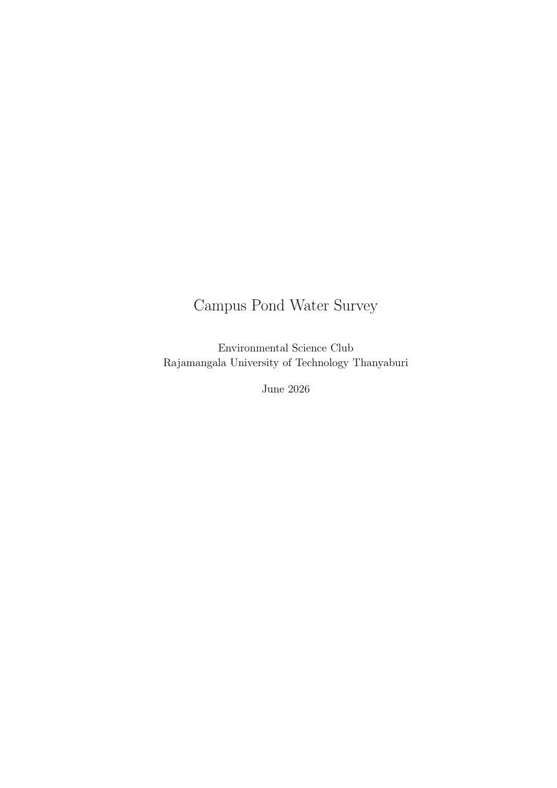
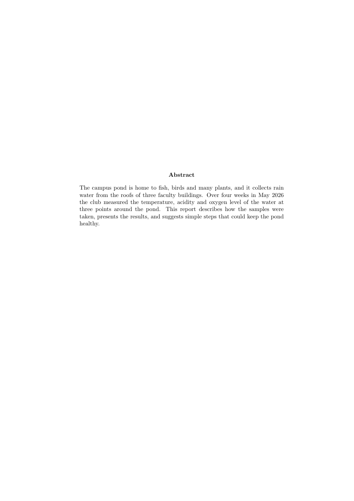
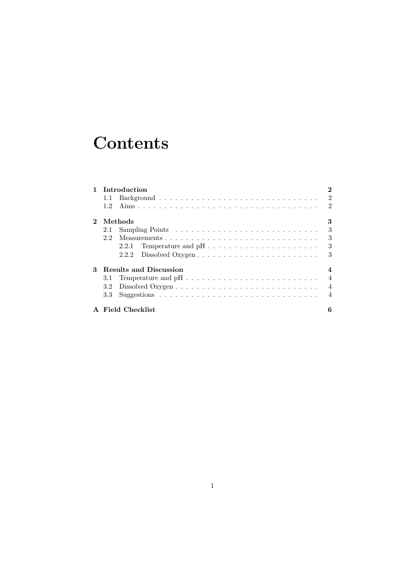
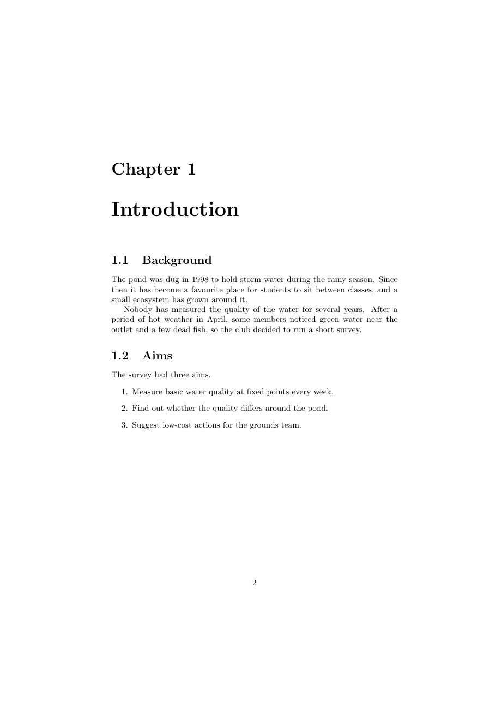
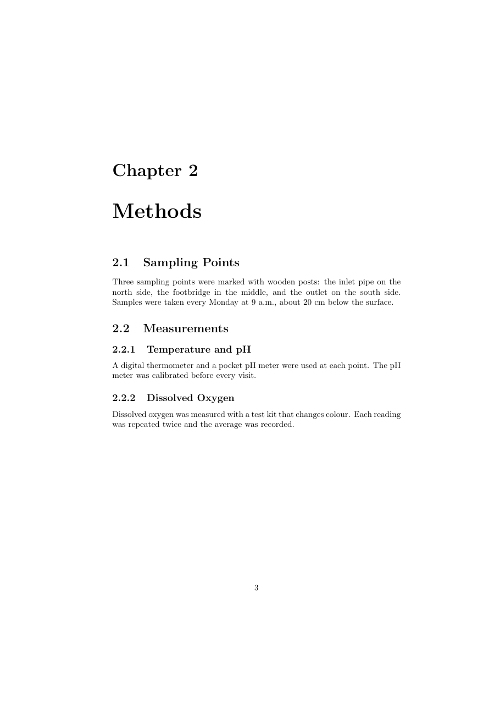
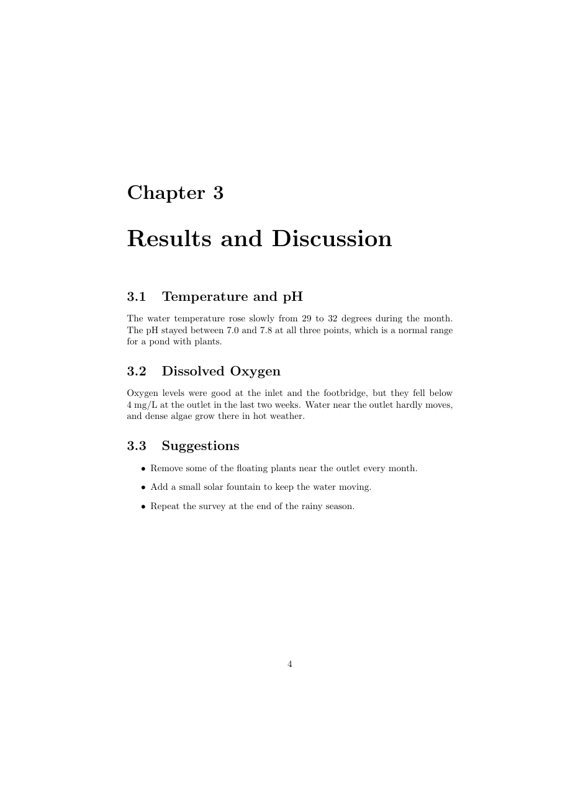
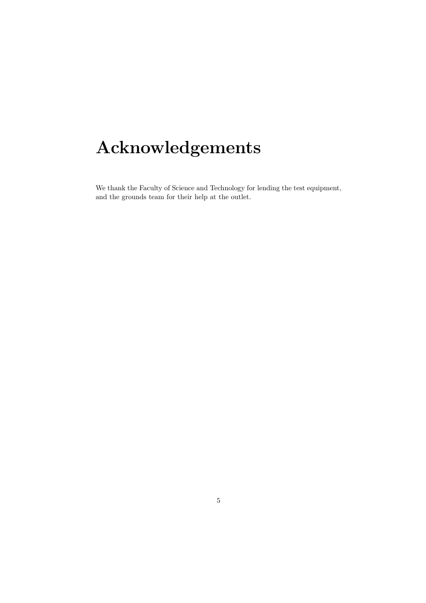
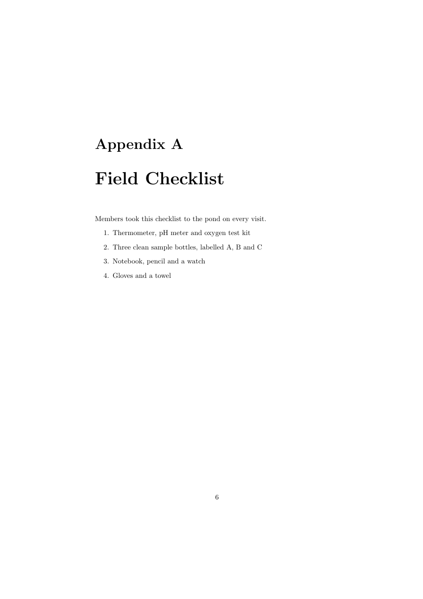

วัตถุประสงค์
เมื่อจบ Workshop นี้ นักศึกษาจะสามารถ
- เลือกใช้คลาสเอกสาร
article,reportและbookได้เหมาะกับงาน และบอกความแตกต่างหลักของแต่ละคลาสได้ - แบ่งเอกสารเป็นบทด้วย
\chapterและสร้างบทที่ไม่มีหมายเลขด้วย\chapter*ได้ - สร้างภาคผนวกด้วย
\appendixได้ - ใช้
\frontmatter,\mainmatterและ\backmatterในหนังสือ และอธิบายผลต่อเลขหน้าและหมายเลขบทได้ - ปรับตัวเลือกของคลาส
openany,onesideและรูปแบบหน้า\pagestyleได้
ไฟล์ที่ได้รับ
ดาวน์โหลด reports_books.zip แล้วแตกไฟล์ไว้ในที่ที่หาง่าย จะได้โฟลเดอร์ reports_books ดังนี้
reports_books/
├── doc.pdf ชิ้นงานต้นแบบ (รายงาน 8 หน้า)
├── warmup.tex หนังสือเล่มเล็กสำหรับ Part A
├── main.tex ไฟล์เริ่มต้นสำหรับ Part B
└── content.txt เนื้อหาทั้งหมดของ Part B ไม่ต้องพิมพ์ใหม่ดูไฟล์แยกทีละไฟล์ได้ที่
warmup.tex,
main.tex,
content.txt
เตรียมเครื่อง
ประมาณ 5 นาทีใช้เครื่องมือชุดเดียวกับ Workshop ก่อนหน้า เปิดโฟลเดอร์ reports_books ใน Sublime Text และเปิดเทอร์มินัลในโฟลเดอร์เดียวกัน
เอกสารทั้งสองไฟล์มีสารบัญ จึงต้องคอมไพล์ 2 ครั้งทุกครั้งที่แก้หัวข้อหรือบท
$ pdflatex warmup.tex
$ pdflatex warmup.texอุ่นเครื่อง
ประมาณ 35 นาทีไฟล์ warmup.tex เป็นหนังสือเล่มเล็กเรื่องการผูกเชือกที่ใช้คลาส book ทำทีละข้อ คอมไพล์ 2 ครั้ง และสังเกตผล
- A0 คอมไพล์ไฟล์ตามที่ได้รับ 2 ครั้ง ดูบรรทัดสุดท้ายในเทอร์มินัล
Output written on warmup.pdf (11 pages, ...)เนื้อหาสั้นมากแต่ได้ถึง 11 หน้า หน้าว่างอยู่ตรงไหนบ้าง และบทใหม่ทุกบทเริ่มที่หน้าเลขคี่หรือเลขคู่
- A1 เปลี่ยนเป็น
\documentclass[openany]{book}แล้วคอมไพล์ 2 ครั้งจำนวนหน้าเหลือเท่าไร ตัวเลือก
openanyเปลี่ยนกฎการขึ้นบทใหม่อย่างไร - A2 ลบ
openanyออก แล้วใส่\frontmatterไว้ใต้\begin{document}และใส่\mainmatterไว้หน้า\chapter{Basic Knots}เลขหน้าของสารบัญและบท
Before You Startเป็นตัวเลขแบบใด บทนั้นมีหมายเลขบทหรือไม่ และBasic Knotsกลายเป็นบทที่เท่าไร - A3 ใส่
\appendixไว้หน้า\chapter{Answers to the Quiz}ชื่อบทนี้ในเนื้อหาและในสารบัญเปลี่ยนไปอย่างไร
- A4 เปลี่ยน
\appendixเป็น\backmatterแล้วเปรียบเทียบ จากนั้นเปลี่ยนกลับเป็น\appendixบทที่อยู่หลัง
\backmatterมีหมายเลขหรือไม่ - A5 สังเกตหัวกระดาษ (ข้อความเล็ก ๆ ด้านบนของหน้า) ในหน้าที่ไม่ใช่หน้าแรกของบท แล้วเพิ่ม
\pagestyle{plain}ไว้หลัง\mainmatterหัวกระดาษหายไปหรือไม่ เลขหน้าย้ายไปอยู่ตรงไหน
- A6 เปลี่ยนเป็น
\documentclass[oneside]{book}แล้วดูแบบสองหน้าคู่กันระยะขอบซ้ายขวาของหน้าคี่และหน้าคู่ต่างกันก่อนและหลังใช้
onesideหรือไม่ - A7 เปลี่ยนคลาสเป็น report ด้วย
\documentclass{report}แล้วคอมไพล์ เทอร์มินัลจะหยุดและแสดง
พิมพ์ x แล้ว Enter จากนั้นลบ! Undefined control sequence. l.13 \frontmatter ?\frontmatterและ\mainmatterออก แล้วเปลี่ยน\chapter{Before You Start}เป็น\chapter*{Before You Start}ทำไมคลาส
reportจึงไม่รู้จัก\frontmatterและหัวเรื่องของรายงานต่างจากหนังสืออย่างไร - A8 ทำให้ผิดโดยตั้งใจ เปลี่ยนคลาสเป็น
articleแล้วคอมไพล์! Undefined control sequence. l.17 \chapter {Before You Start} ?ถ้าต้องการแบ่งบทความเป็นส่วนใหญ่ ๆ ควรใช้คำสั่งใดแทน
พิมพ์ x แล้ว Enter แล้วเปลี่ยนกลับเป็น\chapterbookก่อนไปต่อ (หมายเลขบรรทัดของแต่ละคนอาจไม่ตรงกับตัวอย่าง)
\chapter (2) ทำไมหนังสือจึงมีหน้าว่าง และแก้ได้อย่างไร
(3) \frontmatter กับ \mainmatter เปลี่ยนเลขหน้าอย่างไร และ (4) \appendix เปลี่ยนชื่อบทอย่างไร
งานหลัก
ประมาณ 55 นาทีเปิด main.tex (ใช้คลาส report) และคัดลอกเนื้อหาจาก content.txt มาวาง เพื่อสร้างรายงาน 8 หน้าให้เหมือน doc.pdf มากที่สุด คอมไพล์ 2 ครั้งด้วย
$ pdflatex main.tex
$ pdflatex main.tex







คำแนะนำ
ใน content.txt ป้ายในวงเล็บเหลี่ยมบอกว่าแต่ละบรรทัดเป็นบท หัวข้อ หรือรายการ ตารางนี้บอกเฉพาะสิ่งที่ต้องใช้
| ส่วนของชิ้นงาน | สิ่งที่ต้องใช้ |
|---|---|
| หน้า 1 (หน้าปก) | \title, \author, \date และ \maketitle ชื่อผู้เขียนมี 2 บรรทัด ใช้ \\ |
| หน้า 2 (Abstract) | สภาพแวดล้อม abstract (คลาส report แยกไว้หน้าของตัวเอง) |
| หน้า 3 (Contents) | \tableofcontents |
| บทที่ 1–3 | \chapter, \section, \subsection |
| Aims, Suggestions และ Field Checklist | enumerate และ itemize จาก Workshop การจัดรูปแบบข้อความ |
| Acknowledgements | บทที่ไม่มีหมายเลขและไม่อยู่ในสารบัญ |
| Appendix A | \appendix ก่อนบทสุดท้าย |
9 a.m., 20 cm, 4 mg/L | ช่องว่างไม่ตัดบรรทัด ~ ระหว่างตัวเลขกับหน่วย |
คำใบ้เพิ่มเติม (เปิดดูเมื่อติด)
- คลาส
reportขึ้นหน้าใหม่ให้ทุกบทเอง ไม่ต้องสั่งขึ้นหน้าใหม่ - หน้าปกและหน้าบทคัดย่อไม่มีเลขหน้า สารบัญอยู่หน้าที่มีเลข 1 นี่เป็นค่าปกติของคลาส
report - ถ้าภาคผนวกในสารบัญแสดงเป็น
4 Field Checklistแปลว่าลืม\appendixหรือวางผิดตำแหน่ง - ถ้าได้มากกว่า 8 หน้า ให้ตรวจว่าใช้คลาส
reportไม่ใช่book
ส่งงาน
เปลี่ยนชื่อไฟล์เป็น reports_books_<รหัสนักศึกษา>.tex แล้วคอมไพล์ใหม่ 2 ครั้งด้วยชื่อนั้น ส่งทั้งไฟล์ .tex และ .pdf
รายการตรวจสอบก่อนส่ง
ท้าทาย
ไม่บังคับ · ประมาณ 20–30 นาทีทำเพิ่มในไฟล์ใหม่ (คัดลอกจากงาน Part B) ข้อใดก็ได้
- C1 เปลี่ยนรายงานเป็นคลาส
bookทั้งเล่ม ใช้\frontmatterกับ Acknowledgements เป็นคำนำ (ย้ายไปไว้ก่อนบทที่ 1) และ\mainmatterก่อนบทที่ 1สิ่งใดต้องเปลี่ยนเพราะคลาส
bookไม่มีสภาพแวดล้อมabstract - C2 ทำ C1 ต่อให้หนังสือไม่มีหน้าว่างเลยโดยใช้ตัวเลือกของคลาส แล้วนับจำนวนหน้าเทียบกับก่อนแก้
- C3 แบ่งรายงานเป็น 2 ภาคด้วย
\part(บทที่ 1–2 และบทที่ 3)ในคลาส
reportคำสั่ง\partทำให้เกิดอะไรขึ้นกับหน้า และต่างจากในarticleที่ลองใน Workshop โครงสร้างเอกสารประเภทบทความ อย่างไร - C4 เขียนรายงานสั้น ๆ ของตัวเองเป็นภาษาอังกฤษอย่างน้อย 3 บทและภาคผนวก 1 บท เช่น รายงานกิจกรรมชมรมหรือการสำรวจในมหาวิทยาลัย
ข้อผิดพลาดที่พบบ่อย
| อาการ | สาเหตุและวิธีแก้ |
|---|---|
! Undefined control sequence. ที่ \chapter |
ใช้คลาส article ซึ่งไม่มีบท เปลี่ยนเป็น report หรือ book |
! Undefined control sequence. ที่ \frontmatter หรือ \mainmatter |
คำสั่งเหล่านี้มีเฉพาะในคลาส book |
! LaTeX Error: Environment abstract undefined. |
คลาส book ไม่มี abstract ใช้ \chapter*{Abstract} แทน หรือใช้คลาส report |
| มีหน้าว่างระหว่างบท | คลาส book เริ่มบทใหม่ที่หน้าขวา (เลขคี่) เสมอ ใช้ตัวเลือก openany ถ้าไม่ต้องการ |
| ภาคผนวกได้หมายเลข 4 แทน A | ลืม \appendix หรือวางไว้หลัง \chapter ของภาคผนวก |
| บทที่ไม่มีหมายเลขหายไปจากสารบัญ | เป็นพฤติกรรมปกติของ \chapter* |
| สารบัญไม่ตรงกับเนื้อหา | คอมไพล์อีกครั้ง หรือลบ .aux และ .toc แล้วคอมไพล์ใหม่ 2 ครั้ง |
แหล่งอ้างอิง
- สไลด์บทเรียน Document Structure (หัวข้อ Standard Document Classes และตัวอย่างผลลัพธ์ของ report และ book)
- The Not So Short Introduction to LaTeX (เปิดด้วย
texdoc lshort) บทที่ 1 หัวข้อ Document Classes และบทที่ 2 หัวข้อ Chapters and Sections